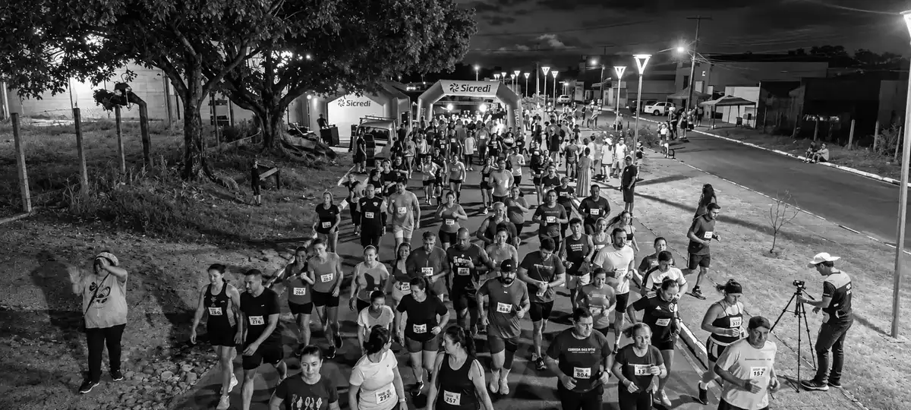

Guia Gastronômico Araruna 72 anos Night Run
Escolha uma categoria
Mapa
O mapa não carregou agora. A lista de cada categoria e os botões "Como chegar" continuam funcionando.
Categoria
Ainda não há estabelecimentos cadastrados nesta categoria.